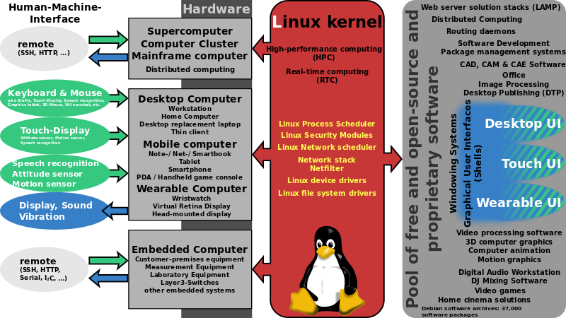
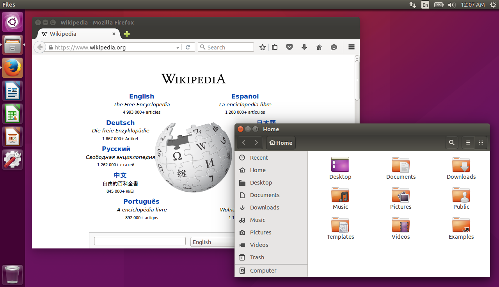

Linux

Linux is a Unix-like computer operating system assembled under the model of free and open-source software development and distribution. The defining component of Linux is the Linux kernel, an operating system kernel first released on September 17, 1991 by Linus Torvalds.The Free Software Foundation uses the name GNU /Linux to describe the operating system, which has led to some controversy while they explicitly have no controversy over the name Android (they object to it on proprietary grounds however), as GNU is not a part of it.
Programing on linux
Linux was originally developed for personal computers based on the Intel x86 architecture, but has since been ported to more platforms than any other operating system. Because of the dominance of Android on smartphones, Linux has the largest installed base of all general-purpose operating systems. Linux is also the leading operating system on servers and other big iron systems such as mainframe computers and on 99.6% (including top 385) of the fastest (TOP500) supercomputers, but is used on only around 2.3% of desktop computers not including Chrome OS, used in Chromebooks, that are dominating the US K–12 education market, while overall in the US are at about 5% and representing nearly 20% of the sub-$300 notebook sales. Linux also runs on embedded systems, which are devices whose operating system is typically built into the firmware and is highly tailored to the system; this includes smartphones and tablet computers running Android and other Linux derivatives, TiVo and similar DVR devices, network routers, facility automation controls, televisions, video game consoles and smartwatches.
The development of Linux is one of the most prominent examples of free and open-source software collaboration. The underlying source code may be used, modified and distributed—commercially or non-commercially—by anyone under the terms of its respective licenses, such as the GNU General Public License. Typically, Linux is packaged in a form known as a Linux distribution (or distro for short) for both desktop and server use.
Desktop Linux distributions include a windowing system, such as X11, Mir or a Wayland implementation, and an accompanying desktop environment such as GNOME or the KDE Software Compilation; some distributions may also include a less resource-intensive desktop, such as LXDE or Xfce. Distributions intended to run on servers may omit all graphical environments from the standard install, and instead include other software to set up and operate a solution stack such as LAMP. Because Linux is freely redistributable, anyone may create a distribution for any intended use.

Differente Linux distributions
Some of the most popular mainstream Linux distributions are Arch Linux, CentOS, Debian, Fedora, Gentoo Linux, Linux Mint, Mageia, openSUSE and Ubuntu, together with commercial distributions such as Red Hat Enterprise Linux and SUSE Linux Enterprise Server. Distributions include the Linux kernel, supporting utilities and libraries, many of which are provided by the GNU Project, and usually a large amount of application software to fulfil the distribution's intended use.Linux was originally developed for personal computers based on the Intel x86 architecture, but has since been ported to more platforms than any other operating system. Because of the dominance of Android on smartphones, Linux has the largest installed base of all general-purpose operating systems. Linux is also the leading operating system on servers and other big iron systems such as mainframe computers and on 99.6% (including top 385) of the fastest (TOP500) supercomputers, but is used on only around 2.3% of desktop computers not including Chrome OS, used in Chromebooks, that are dominating the US K–12 education market, while overall in the US are at about 5% and representing nearly 20% of the sub-$300 notebook sales. Linux also runs on embedded systems, which are devices whose operating system is typically built into the firmware and is highly tailored to the system.
- Debian
- Kali
- Fedora
- SUSE
- Gentoo
- Arch
Hardwere support
The Linux kernel is a widely ported operating system kernel, available for devices ranging from mobile phones to supercomputers; it runs on a highly diverse range of computer architectures, including the hand-held ARM-based iPAQ and the IBM mainframes System z9 or System z10. Specialized distributions and kernel forks exist for less mainstream architectures; for example, the ELKS kernel fork can run on Intel 8086 or Intel 80286 16-bit microprocessors, while the µClinux kernel fork may run on systems without a memory management unit. The kernel also runs on architectures that were only ever intended to use a manufacturer-created operating system, such as Macintosh computers (with both PowerPC and Intel processors), PDAs, video game consoles, portable music players, and mobile phones.
There are several industry associations and hardware conferences devoted to maintaining and improving support for diverse hardware under Linux, such as FreedomHEC. Over time, support for different hardware has improved in Linux, resulting in any off-the-shelf purchase having a "good chance" of being compatible

Desktop

The popularity of Linux on standard desktop computers and laptops has been increasing over the years.Most modern distributions include a graphical user environment, with, as of February 2015, the two most popular environments being the KDE Plasma Desktop and Xfce.
No single official Linux desktop exists: rather desktop environments and Linux distributions select components from a pool of free and open-source software with which they construct a GUI implementing some more or less strict design guide. GNOME, for example, has its human interface guidelines as a design guide, which gives the human–machine interface an important role, not just when doing the graphical design, but also when considering people with disabilities, and even when focusing on security.
The collaborative nature of free software development allows distributed teams to perform language localization of some Linux distributions for use in locales where localizing proprietary systems would not be cost-effective. For example, the Sinhalese language version of the Knoppix distribution became available significantly before Microsoft translated Windows XP into Sinhalese. In this case the Lanka Linux User Group played a major part in developing the localized system by combining the knowledge of university professors, linguists, and local developers.
Servers, mainframes and supercomputers
Linux distributions have long been used as server operating systems, and have risen to prominence in that area; Netcraft reported in September 2006, that eight of the ten most reliable internet hosting companies ran Linux distributions on their web servers.[95] In June 2008, Linux distributions represented five of the top ten, FreeBSD three of ten, and Microsoft two of ten;[96] since February 2010, Linux distributions represented six of the top ten, FreeBSD two of ten, and Microsoft one of ten.
Linux distributions are the cornerstone of the LAMP server-software combination (Linux, Apache, MariaDB/MySQL, Perl/PHP/Python) which has achieved popularity among developers, and which is one of the more common platforms for website hosting.
Linux distributions have become increasingly popular on mainframes, partly due to pricing and the open-source model.[99] In December 2009, computer giant IBM reported that it would predominantly market and sell mainframe-based Enterprise Linux Server. At LinuxCon North America 2015, IBM announced LinuxONE, a series of mainframes specifically designed to run Linux and open-source software.
Linux distributions are also most commonly used as operating systems for supercomputers; in the decade since the Earth Simulator supercomputer, all the fastest supercomputers have used Linux. As of November 2016, 99.6% of the world's 500 fastest supercomputers run some variant of Linux, (the only exceptions, are ranked 386th and 387th and they run AIX Unix). Linux is also dominant on the Green500 list.
Components and installation
Besides externally visible components, such as X window managers, a non-obvious but quite central role is played by the programs hosted by freedesktop.org, such as D-Bus or PulseAudio; both major desktop environments (GNOME and KDE) include them, each offering graphical front-ends written using the corresponding toolkit (GTK+ or Qt). A display server is another component, which for the longest time has been communicating in the X11 display server protocol with its clients; prominent software talking X11 includes the X.Org Server and Xlib. Frustration over the cumbersome X11 core protocol, and especially over its numerous extensions, has led to the creation of a new display server protocol, Wayland.
Installing, updating and removing software in Linux is typically done through the use of package managers such as the Synaptic Package Manager, PackageKit, and Yum Extender. While most major Linux distributions have extensive repositories, often containing tens of thousands of packages, not all the software that can run on Linux is available from the official repositories. Alternatively, users can install packages from unofficial repositories, download pre-compiled packages directly from websites, or compile the source code by themselves. All these methods come with different degrees of difficulty; compiling the source code is in general considered a challenging process for new Linux users, but it is hardly needed in modern distributions and is not a method specific to Linux.